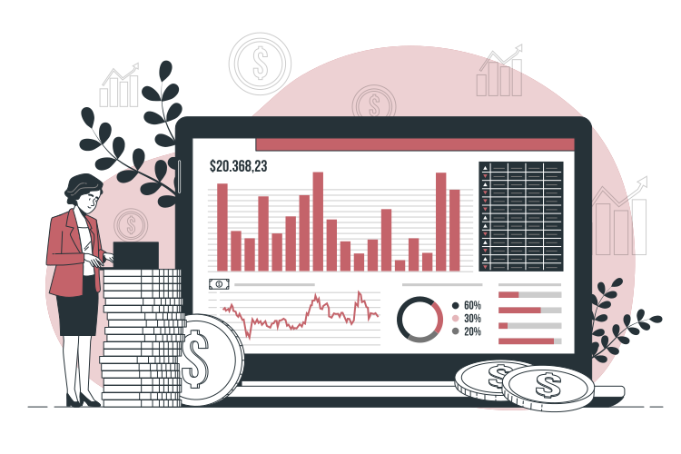

Gregorio Adri Prawira
Data AnalystData Scientist
About Me
I'm a Melbourne-based data analyst with over two years of experience in commercial and operations analytics and a Master of Data Science from Monash University.
I investigate root causes, improve data reliability and usability with data validation and automated reporting through dashboards which translate findings into business recommendations. Through my studies and projects, I also build and evaluate predictive models.
What I Can Do
-
Data Quality
Clean, validate and reconcile data.
-
Reporting & Dashboards
Automate reporting and track performance.
-
Business Analysis
Investigate root causes and explain findings.
-
Predictive Modelling
Build and evaluate predictive models.
Projects

Superannuation Early Warning
I built an APRA data pipeline to flag MySuper options at risk of bottom-quartile returns over the next four quarters, with archived predictions and drift monitoring.
Tools
Methods
Random Forest · Feature engineering · Purged temporal validation
0.791
Historical final-test ROC AUC · 29 predictors
BeyondReAim
I led the data workstream for a team-built career-readiness platform, preparing labour-market data, designing the database and supporting model development.
Tools
Methods
Data validation · ERD design · Feature preparation
56Occupations
Labour-market and skills data across four industries
Skills
Tools and methods I've applied through professional experience, study and projects.
Programming & Data Wrangling
- Python
- SQL
- R
- pandas
- NumPy
Databases & Data Modelling
- PostgreSQL
- Neon
- Snowflake
- BigQuery
- ERD
- Star Schema
Machine Learning & Statistics
- scikit-learn
- XGBoost
- Random Forest
- Regression
- TF-IDF
- Statistical Modelling
Visualisation & BI
- Power BI
- Looker Studio
- Metabase
- Excel
- Streamlit
- QGIS
Core Skills & Tools
- Data Validation
- Reporting Automation
- Root-Cause Analysis
- Feature Engineering
- Spatial Analysis
Certifications
Power BI Data Analyst Associate
PL-300Microsoft Certified
Data preparation, modelling, visualisation and analysis.
View CredentialAzure AI Fundamentals
AI-900Microsoft Certified
Foundational AI concepts and Azure AI services.
View Credential